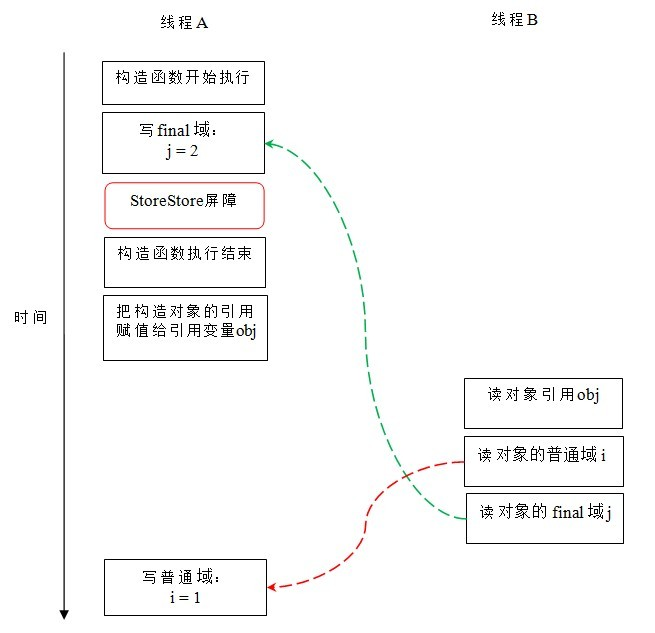

JAVA的关键字final
final data：final修改基本数据类型时，final让其值保持不变，但是当用于引用类型，也就是object reference 时，final仅让reference保持不变。也就是说reference一旦被初始化用于某个对象时，便不能改变指向另一个对象，但对象内容是可变的。
public calss Test1{
private final li_int=12;
private final InClass inClass1 = new InClass(5);
private final InClass inClass2 = new InClass(8);
public void modifiedFinal(int a){
//下面语句会出现编译错误，不能修改final基本类型的值。
li_int = 11;
//下面语句会出现编译错误，不能将已经初始化的final变量指向另一个对象
inClass1=inClass2;
//虽然指向不能改变，但对象本身的内容是可编辑的。
inClass1.mod(12);
}
}
blank final：java允许将数据程序声明未final却不赋值。但是，必须在使用之前初始化，而且必须在构造函数中初始化。
public class Test2{
private final int li_int;
public Test2(int a){
//对未赋值的final变量，必须在构造函数内赋值。
li_int = 10;
}
public int mod(int a){
//编译出错，对final变量的赋值必须在构造函数内。
li_int =a;
}
}
final arguments：声明参数为final，可以保证该argument不在被指向其他地方，当为基本数据类型时，意味着参数的值不可改变。
public void modifiedFinal (final int a,final InClass in){
//编译出错，不能修改final基本类型的值。
a = 15;
//编译出错，不能修改final引用类型的指向。
in = inClass2;
//引用类型的内容可以修改。
in.mode(a);
}
final methods：以final修饰的方法，不允许子类重写。
final class：以final修饰的类，不允许继承。
PS：
- 对final属性在声明时就赋值，而且赋的值是常量的话，那编译器会将所有用到此属性的地方都替换成常量。
- 对不是在编译时确定fianl属性值的情况下，final属性的值是可以改变的。
public class Test1Class1{
public final int x;
public Test1Class1(){
x = 100;
}
}
public int mod(Test1Class1 t1){
int i = t1.x;
System.out.println("i's value is"+i);
changeX(t1);
i = t1.x;
System.out.println("i's value is"+i)
}
public static void changeX(Test1Class1 t1){
Class cl = t1.getClass();
Field fielx = cl.getDeclaredField("x");
filedx.setAccessible(true);
filedx.setInt(t1,200);
}
从上面的例子可见，final属性的值还是可以被改变的，但只有在特殊情况下（没有在编译时被替换），使用特殊方式（像反射这样的方式），final属性的值才会改变。
final与多线程
对于final域的访问，编译器和处理器要遵守两个重排序规则：
- 在构造函数内对一个final域的写入，与随后把这个被构造对象的引用赋值给一个引用变量，这两个操作之间不能重排序。
- 初次读一个包含final域的对象的引用，与随后初次读这个final域，这两个操作之间不能重排序。
列子：
public class FinalExample{
int i; //普通变量
final int j; //final变量
static FinalExample obj;
pubilc FinalExample(){ //构造函数
i = 1; //写普通域
j = 2; //写final域
}
public static void writer(){ //写线程A
obj = new FinalExample();
}
public static void reader(){ //读线程B
FinalExample object = obj; //读对象引用
int a = object.i; //读普通域
int b = object.j; //读final域
}
}
写final域的重排序规则
写final域的重排序规则禁止把final域的写重排序到构造函数之外。这个规则有两方面含义：
- JMM禁止编译器把final域的写重排序到构造函数之外。
- 编译器会在final域的写之后，构造函数return之前，插入一个StoreStore屏障。这个屏障禁止处理器把final域写 重排序到构造函数之外。
下图是以假设读对象与读属性两个语句没有重排序为前提的。

有上图可以看出，线程B能够正确得到final域的值，而普通变量则很有可能未完成初始化及被线程B读取，从而出现错误。这是因为写final域的重排序规则，可以确保对象引用在被任意线程可见前，对象的final域一起被初始化了，而普通域没有这个保障。
读final域的重排序规则
读final域的重排序规则如下：
- 在一个线程中，初次读对象引用与初次读该对象包含的final域，JMM禁止处理器重排序这两个操作（此规则只针对处理器）。编译器会在读final域操作的前面插入一个LoadLoad屏障。
由于初次读对象引用与初次读该对像包含的final域，这两个操作之间存在间接依赖关系。由于编译器遵守间接依赖关系，因此不会重排序这两个操作。大多数处理器也会遵守间接依赖，但是少说允许对存在间接依赖关系的操作做重排序，这条规则就是专门针对这些处理器的。
下图是以假设线程A没有发生任何重排序，同时程序在不遵守间接依赖的处理器上执行的。

如上图，读对象的普通域时，该域还未被线程A写入，这是一个i阿错误操作。而读final域的重排序规则会把读对象final域的操作限定在读对象引用之后，此时final域是已经初始化过的，这是一个正确的读操作。
final域为引用类型
针对引用类型，写final域的重排序规则对编译器和处理器增加了如下约束：
- 在构造函数内对一个final引用的对象的成员域的写入，与随后在构造函数外把这个被构造对象的引用赋给一个引用变量，这两个操作之间不能重排序。
示例：
public class FinalReferenceExample{
final int[] intArray;
static FinalReferenceExample obj;
public FinalReferenceExample(){ //构造函数
intArray = new int[1]; //1
intArray[0] = 1; //2
}
public static void writerOne(){ //写线程A
obj = new FinalReferenceExample(); //3
}
public static void wtiterTwo(){ //写线程B
obj.intArray[0] = 2; //4
}
public static void reader(){ //读线程C
if(obj!=null){ //5
int temp1 = obj.intArray[0]; //6
}
}
}
对上面的示例程序，我们假设首先线程A执行writerOne()方法，执行完后线程B执行writerTwo()方法，执行完后线程C执行reader()方法。如下图所示：

上图这里除了之前提到的1和3不能重拍外，根据本次规则2和3也不能重排序。
JMM可以确保线程C至少能看到写线程A在构造函数中对final引用对象的成员域的写入。即C至少能看到数组下标0的值为1.而写线程B对数组元素的写入，读线程C可呢过看到，也可能看不到。JMM不能保证线程B的写入对线程C可见，他俩存在数据竞争。
想确保写线程B和读线程C之间可见，需要同步原语（lock或volatile)。
final引用从构造函数中逸出
我们已经知道在写final域的重排序规则可以确保：在引用变量为任意线程可见之前，该引用变量指向的对象的final域已经在构造函数中被正确初始化了。其实要得到这个效果还需要保证：在构造函数内部，不能让这个被构造对象的引用为其他线程可见，也就是对象引用不能在构造函数中逸出。
示例代码：
public class FinalReferenceEscapeExample{
final int i;
static FinalReferenceEscapeExample obj;
public FinalReferenceEscapeExample(){
i=1; //1 写final域
obj = this; //2 this 引用在此"逸出"
}
public static void writer(){
new FinalReferenceEscapeExample();
}
public static void read(){
if(obj!=null){ //3
int temp = obj.i; //4
}
}
}

从上图可以看出：在构造函数返回之前，为什么被构造对象的引用不能被其他线程可见，因为此时final域可能还没有被初始化。在构造函数返回后，任意线程都将保证能看到final域正确初始化之后的值。
发布一个对象的意思是指，是对象能够在当前作用域之外的代码中使用。
JSR-133增强final语义的目的
通过为final域增加写和读重排序规则，可以为Java程序员提供初始化安全包子：只要对象是正确构造的（被构造对象的引用没有在构造函数中逸出），那么不需要使用同步（指lock和volatile的使用），就可以保证任意线程都能看到这个final域在构造函数中被初始化之后的值。
日期：2013-07-15、2013-07-16